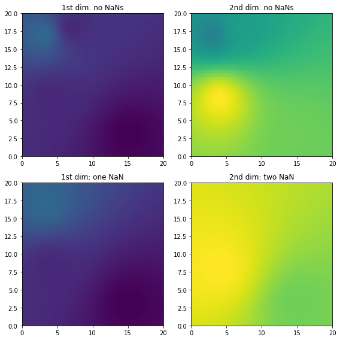
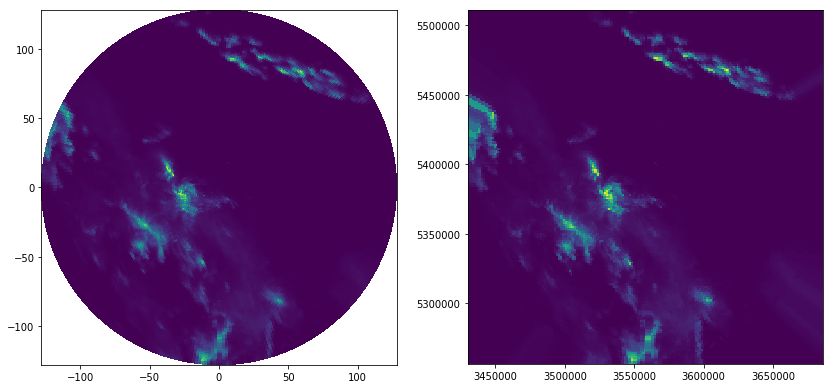

How to use wradlib’s ipol module for interpolation tasks?¶
In [2]:
import wradlib.ipol as ipol
from wradlib.util import get_wradlib_data_file
from wradlib.vis import plot_ppi
import numpy as np
import matplotlib.pyplot as pl
import datetime as dt
import warnings
warnings.filterwarnings('ignore')
try:
get_ipython().magic("matplotlib inline")
except:
pl.ion()
/home/travis/miniconda/envs/wradlib/lib/python2.7/site-packages/h5py/__init__.py:36: FutureWarning: Conversion of the second argument of issubdtype from `float` to `np.floating` is deprecated. In future, it will be treated as `np.float64 == np.dtype(float).type`.
from ._conv import register_converters as _register_converters
1-dimensional example¶
Includes Nearest Neighbours, Inverse Distance Weighting, and Ordinary Kriging.
In [3]:
# Synthetic observations
xsrc = np.arange(10)[:, None]
vals = np.sin(xsrc).ravel()
# Define target coordinates
xtrg = np.linspace(0, 20, 100)[:, None]
# Set up interpolation objects
# IDW
idw = ipol.Idw(xsrc, xtrg)
# Nearest Neighbours
nn = ipol.Nearest(xsrc, xtrg)
# Linear
ok = ipol.OrdinaryKriging(xsrc, xtrg)
# Plot results
pl.figure(figsize=(10,5))
pl.plot(xsrc.ravel(), vals, 'bo', label="Observation")
pl.plot(xtrg.ravel(), idw(vals), 'r-', label="IDW interpolation")
pl.plot(xtrg.ravel(), nn(vals), 'k-', label="Nearest Neighbour interpolation")
pl.plot(xtrg.ravel(), ok(vals), 'g-', label="Ordinary Kriging")
pl.xlabel("Distance", fontsize="large")
pl.ylabel("Value", fontsize="large")
pl.legend(loc="bottomright")
Out[3]:
<matplotlib.legend.Legend at 0x7fef72c04690>

2-dimensional example¶
Includes Nearest Neighbours, Inverse Distance Weighting, Linear Interpolation, and Ordinary Kriging.
In [4]:
# Synthetic observations and source coordinates
src = np.vstack( (np.array([4, 7, 3, 15]), np.array([8, 18, 17, 3]))).transpose()
vals = np.random.uniform(size=len(src))
# Target coordinates
xtrg = np.linspace(0, 20, 40)
ytrg = np.linspace(0, 20, 40)
trg = np.meshgrid(xtrg, ytrg)
trg = np.vstack( (trg[0].ravel(), trg[1].ravel()) ).T
# Interpolation objects
idw = ipol.Idw(src, trg)
nn = ipol.Nearest(src, trg)
linear = ipol.Linear(src, trg)
ok = ipol.OrdinaryKriging(src, trg)
# Subplot layout
def gridplot(interpolated, title=""):
pm = ax.pcolormesh(xtrg, ytrg, interpolated.reshape( (len(xtrg), len(ytrg)) ) )
pl.axis("tight")
ax.scatter(src[:, 0], src[:, 1], facecolor="None", s=50, marker='s')
pl.title(title)
pl.xlabel("x coordinate")
pl.ylabel("y coordinate")
# Plot results
fig = pl.figure(figsize=(8,8))
ax = fig.add_subplot(221, aspect="equal")
gridplot(idw(vals), "IDW")
ax = fig.add_subplot(222, aspect="equal")
gridplot(nn(vals), "Nearest Neighbours")
ax = fig.add_subplot(223, aspect="equal")
gridplot(np.ma.masked_invalid(linear(vals)), "Linear interpolation")
ax = fig.add_subplot(224, aspect="equal")
gridplot(ok(vals), "Ordinary Kriging")
pl.tight_layout()

Using the convenience function ipol.interpolation in order to deal with missing values¶
(1) Exemplified for one dimension in space and two dimensions of the source value array (could e.g. be two time steps).
In [5]:
# Synthetic observations (e.g. two time steps)
src = np.arange(10)[:, None]
vals = np.hstack((1.+np.sin(src), 5. + 2.*np.sin(src)))
# Target coordinates
trg = np.linspace(0, 20, 100)[:, None]
# Here we introduce missing values in the second dimension of the source value array
vals[3:5, 1] = np.nan
# interpolation using the convenience function "interpolate"
idw_result = ipol.interpolate(src, trg, vals, ipol.Idw, nnearest=4)
nn_result = ipol.interpolate(src, trg, vals, ipol.Nearest)
# Plot results
fig = pl.figure(figsize=(10,5))
ax = fig.add_subplot(111)
pl1 = ax.plot(trg, idw_result, 'b-', label="IDW")
pl2 = ax.plot(trg, nn_result, 'k-', label="Nearest Neighbour")
pl3 = ax.plot(src, vals, 'ro', label="Observations")

(2) Exemplified for two dimensions in space and two dimensions of the source value array (e.g. time steps), containing also NaN values (here we only use IDW interpolation)
In [6]:
# Just a helper function for repeated subplots
def plotall(ax, trgx, trgy, src, interp, pts, title, vmin, vmax):
ix = np.where(np.isfinite(pts))
ax.pcolormesh(trgx, trgy, interp.reshape( (len(trgx),len(trgy) ) ), vmin=vmin, vmax=vmax )
ax.scatter(src[ix, 0].ravel(), src[ix, 1].ravel(), c=pts.ravel()[ix], s=20, marker='s',
vmin=vmin, vmax=vmax)
ax.set_title(title)
pl.axis("tight")
In [7]:
# Synthetic observations
src = np.vstack( (np.array([4, 7, 3, 15]), np.array([8, 18, 17, 3])) ).T
vals = np.round(np.random.uniform(size=(len(src), 2)), 1)
# Target coordinates
trgx = np.linspace(0, 20, 100)
trgy = np.linspace(0, 20, 100)
trg = np.meshgrid(trgx, trgy)
trg = np.vstack((trg[0].ravel(), trg[1].ravel())).transpose()
result = ipol.interpolate(src, trg, vals, ipol.Idw, nnearest=4)
# Now introduce NaNs in the observations
vals_with_nan = vals.copy()
vals_with_nan[1, 0] = np.nan
vals_with_nan[1:3, 1] = np.nan
result_with_nan = ipol.interpolate(src, trg, vals_with_nan, ipol.Idw, nnearest=4)
vmin = np.concatenate((vals.ravel(), result.ravel())).min()
vmax = np.concatenate((vals.ravel(), result.ravel())).max()
fig = pl.figure(figsize=(8,8))
ax = fig.add_subplot(221)
plotall(ax, trgx, trgy, src, result[:, 0], vals[:, 0], '1st dim: no NaNs', vmin, vmax)
ax = fig.add_subplot(222)
plotall(ax, trgx, trgy, src, result[:, 1], vals[:, 1], '2nd dim: no NaNs', vmin, vmax)
ax = fig.add_subplot(223)
plotall(ax, trgx, trgy, src, result_with_nan[:, 0], vals_with_nan[:, 0], '1st dim: one NaN', vmin, vmax)
ax = fig.add_subplot(224)
plotall(ax, trgx, trgy, src, result_with_nan[:, 1], vals_with_nan[:, 1], '2nd dim: two NaN', vmin, vmax)
pl.tight_layout()

How to use interpolation for gridding data in polar coordinates?¶
Read polar coordinates and corresponding rainfall intensity from file
In [8]:
filename = get_wradlib_data_file('misc/bin_coords_tur.gz')
src = np.loadtxt(filename)
filename = get_wradlib_data_file('misc/polar_R_tur.gz')
vals = np.loadtxt(filename)
Define target grid coordinates
In [9]:
xtrg = np.linspace(src[:,0].min(), src[:,0].max(), 200)
ytrg = np.linspace(src[:,1].min(), src[:,1].max(), 200)
trg = np.meshgrid(xtrg, ytrg)
trg = np.vstack((trg[0].ravel(), trg[1].ravel())).T
IDW interpolation
In [10]:
ip = ipol.Nearest(src, trg)
result = ip(vals.ravel())
Plot results
In [11]:
fig = pl.figure(figsize=(14,14))
ax = fig.add_subplot(121, aspect="equal")
plot_ppi(vals, ax=ax)
ax = fig.add_subplot(122, aspect="equal")
pl.pcolormesh(xtrg, ytrg, result.reshape( (len(xtrg), len(ytrg)) ) )
Out[11]:
<matplotlib.collections.QuadMesh at 0x7fef6a23dbd0>
